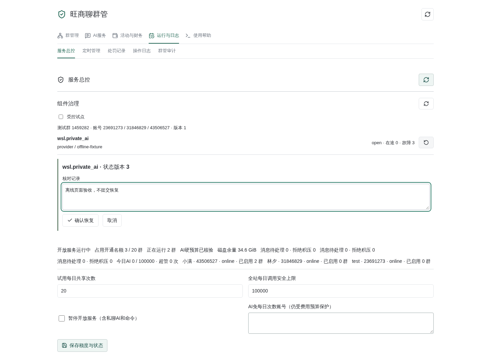
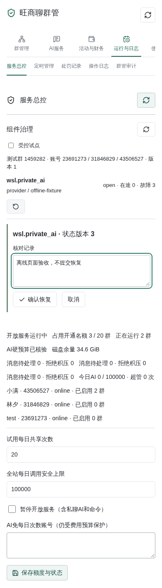
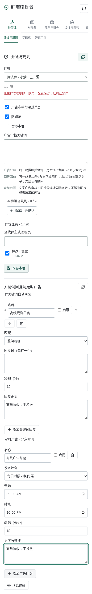

Updated October 21, 2026, Beijing time. The Wangshangliao plugin, management page
and help fix were hot-deployed. Core routes and pipeline updates remain unloaded:
/api/v1/plugins/runtime/status still returns 404. The pilot remains disabled and
none of the three native connectors was restarted. Plugin loading is not complete
runtime-pilot acceptance.
One rules-only production group was admitted through dashboard preview and confirmation, binding a live native administrator without plan or finance grants. Group AI and its tools are denied by the backend. See Rules and AI ownership. Regression: 7,055 passed and 52 skipped. Served management-page checks passed at 1440px and 390px. These verify UI and authorization state, not real sanctions or message delivery in that production group.
AstrBot provides versioned CommandSpec, CapabilitySpec and PageSpec.
Catalogs contain metadata, never executable bindings, message bodies or secrets.
Only server-registered handlers execute. Existing identity, native group rights,
budget, payer consent, version checks and send guards remain authoritative.
The native command catalog is generated from declarations. Existing aliases, parsers, retired-command explanations and confirmation tokens remain compatible. Keyword replies, advertisements and support forms reuse Pydantic schemas; cross-field validation and authorization remain server-side. Other plugins are not migrated. This is cooperative isolation, not a process sandbox or low-code UI.
Defaults are eight active tasks per plugin and two per capability, with immediate busy rejection and no waiting queue. Nested calls share existing slots. Cancellation-resistant work retains its slot until it actually ends. Timeouts are ten seconds by default, thirty for native fixed operations and forty-five for the entire AI turn. Shorter existing deadlines win. Revoked leases fence subsequent commits and sends; blocking synchronous code cannot be terminated by this mechanism.
Three consecutive runtime faults open a circuit for thirty seconds. Business dependencies are account/group scoped; model dependencies use provider bindings. Permission, validation, budget and cooldown rejections are not faults. Failed probes back off exponentially, capped at five minutes. Only one registered, free, read-only probe may run, with a three-second timeout. There are currently no registered Wangshangliao recovery probes: server review and a versioned manual reset are required. Model generation, sends, advertisements and finance operations are never recovery probes.
The runtime control view exposes the pilot switch and versioned recovery review. Resetting a circuit never clears durable unknown outcomes, retries advertisements, replays messages or changes financial accounting.
Dashboard-only APIs do not accept delegated plugin API keys:
GET /api/v1/plugins/runtime/catalogGET /api/v1/plugins/runtime/statusPOST /api/v1/plugins/runtime/recoverRecovery requires an exact capability, scope, version, operation
(probe or reset_after_review) and review reason. Unknown scopes, stale
versions, active work and unsafe probes are rejected. Recovery is audited.
No arbitrary callable, URL or configuration object is accepted.
These desktop/mobile acceptance screenshots use an isolated fault fixture, not a live production circuit.


Commands, menu input, confirmations and matching keyword rules permanently claim their input. Rejection, cooldown, busy status, circuit opening and send failures never fall back to AI. Only explicitly migrated, noncritical observers may continue after an exception while their message remains unclaimed. Legacy plugins retain their previous stop-event behavior.
Support and administrator guidance in controlled windows use a fixed two-second window from the first message. Keys include instance, account, trusted sender, conversation generation, role and configuration version. Limits are twelve messages and 4,096 characters; overflow rejects the whole batch. Commands, menu input, confirmations, finance and exit interrupt pending buffers. Combined text goes only to read-only AI, never back through command parsing. Real group mentions remain immediate. Existing group-chat batching is unchanged.
Native receipt processing does not sleep. At most eight detached batch tasks run. Bodies remain in memory; persistent records contain batch/source IDs and states. Restart discards buffered work and marks dispatched work unknown without replay. Identity, access, configuration, session and test-window checks run again before dispatch and delivery. Waiting counts toward the forty-five-second deadline. Batching itself is free; each model request retains independent pricing, admission and settlement.
The pilot is off by default. It is restricted to group 1459282 and accounts
31846829, 43506527, 23691273, and additionally requires an existing active
native controlled window. Enabling it does not create windows, grant native
roles, confirm budgets or accept payer consent.
Keep configuration snapshots and runtime evidence before and after rollout. Do not change production AI switches or financial ledgers, or restart connectors. Missing rights or consent block native acceptance rather than broadening access. Disable the pilot to return to compatibility routing and revoke pilot leases. Core route/pipeline activation must not trigger an unauthorized production restart. In-memory circuits reset with lifecycle; durable unknown business states remain.
Offline acceptance completed on October 21, 2026, Beijing time. Production activation remains pending:
1459282, 31846829 is an owner without active service;
43506527 has active service but is a member; 23691273 is a member without
active service. Global budget confirmation is not group-level payer consent.
These prerequisites block permission-dependent checks, not participation by
every account in cooperative tests.Subsequent partial native acceptance reused the three existing connections without activating services, granting roles or changing send authorization:
43506527 privately contacted 31846829. Support editing was
explicitly denied to a non-designated editor; menu cancellation passed.
The receiver needs no active group service for these account-level commands.23691273 sent two fixed commands in 1459282. Receiver 43506527 returned
native-permission refusals, independently received by the sender, without AI.An owner or witness does not need its own group-service activation merely to participate. Native administrator rights still depend on the actual operation and existing business boundary. These results do not certify the staged executor, private batching or paid AI in production; full pilot activation remains pending.
This mobile rule-form screenshot contains isolated, unsaved client-side drafts, not created business rules or advertisement schedules.
